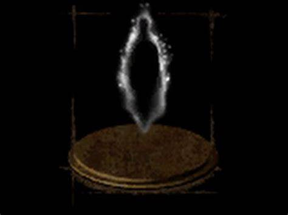

The Bonfire
Arguably the most important thing in the game, the bonfire is one of the only places to rest and replinish your healing supplies. They can also be bolstered to increase the amount of estus flasks that you can use. It also serves as the place where you can use souls to level up. Bonfires are scattered throughout the land and are a welcome sight to weary undead. They are the only place that you know are safe. Unless you play online, then even the bonfires are not safe.

Estus Flask
The estus flask is your main helaing item. No one knows what exactly the drink is, however, some have speculated that, due to its color, it must be Sunny D. You only have a limited amount of them so drink them carefully. They can be replinished at bonfires and can be improved later in the game. You can improve their potency with fire keepers souls. Nothing is worse than tring to drink one once you are out, and seeing the animation of your character turn the bottle upside down after failing to drink it.

Humanity
In Lordran, the loss of humanity helps speed the hollowing process. You can find humanity scattered across the lands. Using them will increase your resistance to curse and item discovery, to a point.

Homeward Bone
The homeward bone is a tool used to warp back to the last bonfire rested at. It is an amazing tool to help you get out of a bad situation, if you can aviod being staggered. They will come in handy on multiple occasions.
Throwable Items
- Firebomb
- Black Firebomb
- Dung Pie (Yes you can throw these and poison enemies with it.)
- Throwing Knife
- Poison Throwing Knife
- Alluring Skull
- Lloyd's Talisman